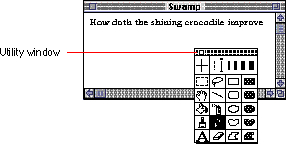
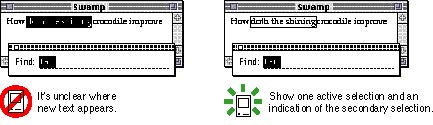

|
|
Utility WindowsA utility window is a small accessory window that provides additional tools or controls to users. A tool palette or a set of text attributes could be implemented in a utility window. Utility windows float on top of document windows. The user can open several utility windows at a time. The user can easily use any utility windows from the active document window. That is, the user doesn't have to click a utility window once to make it active and then click again to make a choice or activate a setting in the window. Figure 5-6 shows an example of a utility window. You can create utility windows as a way to present controls or settings that affect the active window. Utility windows are useful for keeping extremely important controls or information accessible at all times in the context of a user task. Don't use utility windows when you can solve this need with a modeless dialog box (the user can make the appropriate settings and then close the dialog box) or by adding controls to the window frame (where appropriate) because utility windows take up screen space, which is a factor especially on smaller screens. You need to create and maintain any utility windows for your application. Whenever your application is in the background, hide all utility windows. Sometimes applications implement palettes in utility windows. Palettes are discussed in Chapter 4, "Menus," in the section "Tear-Off Menus and Palettes" on page 74. Most utility windows don't have titles. The standard drag region at the top of utility windows is 11 pixels high. If you create utility windows that have title bars and a title (text), make sure the title bar is at least 19 pixels high, the height of a document window title bar. (If you create a smaller title bar with a title, it can't be localized for areas where the system font is never smaller than 12 points.) Fill the title bar with a 25 percent pattern. Don't use racing stripes in a utility window title bar. You can include a close box and a zoom box on utility windows. If you do include these mechanisms, implement them with standard behaviors, as described in "Closing a Window" on page 145 and "The Zoom Box and Window Behavior" on page 156. When a user has a document window open and a utility window that accepts text open as well, it's difficult to make it obvious where keyboard input will appear. You need to implement a way to clarify to users what they can expect in such a situation. You may use a secondary selection technique, such as outlining the text in the inactive window (or making it gray on a color monitor), to distinguish between the active input area and the inactive one. It's also very difficult to manage the input and editing of text in a utility window. If users are confused about where the text will appear, it's probably a better idea to implement a modeless dialog box with the same capability. Figure 5-7 shows an example of a utility window and a document window that both accept text; this type of situation can be confusing to users. Figure 5-7 Make it clear where text will appear  |